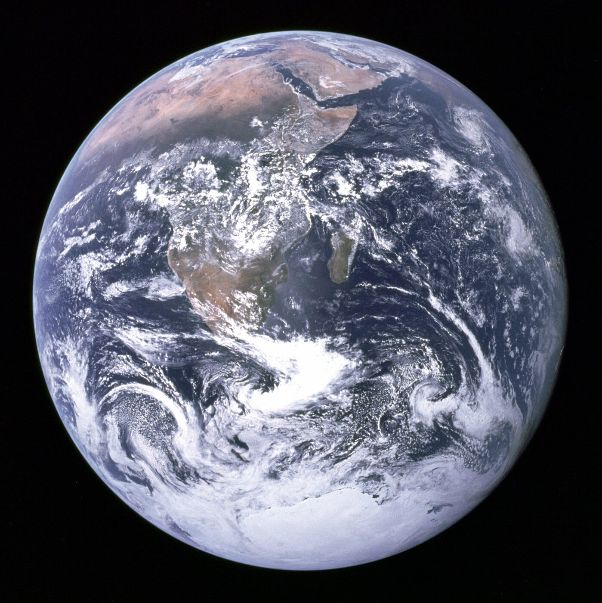
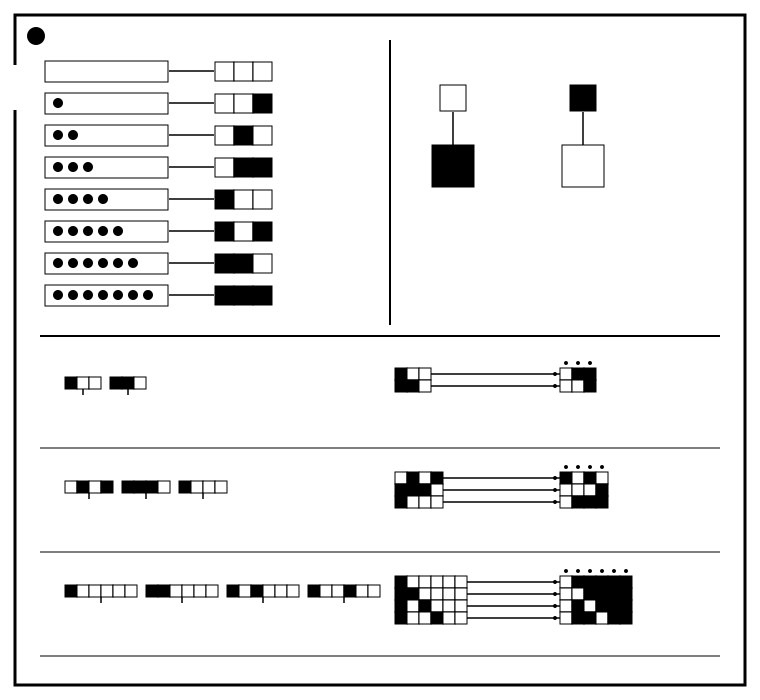

01 / PHYSICAL STATES
Two states can carry a pattern.
Three marks with two visibly different appearances: this is observable before anyone knows what it represents.
THE BIG ENGINEERING QUESTION
Imagine finding a plate covered in tiny marks, with no instructions in a language you know. The challenge is to discover what the marks mean, reconstruct the information, and recover whatever survives damage.
Start here: the arrow teaches reading order; the photograph experiment shows how real images are stored and reconstructed; the error-correction experiment shows how damaged information can sometimes be repaired. These are software demonstrations. The text-free primer asks a harder question: can an unfamiliar reader discover the rules without being told?
TRY THE DECODER
The encoded message contains 64 separate values. Decide where each value goes. If you choose the wrong reading order, the exact same data produces a different image. Select a square to change its encoded value.
A / ORDERED VALUES
Loading encoded example…
The symbols 0 and 1 represent two distinguishable marks. The character shapes themselves are a human convention.
B / RECONSTRUCTED GRID
Select a pixel to see its position in the bitstream.
What this proves: given an agreed width, height, reading order and bit meaning, another computer can reconstruct the picture. What it does not prove: a reader unfamiliar with our conventions could independently discover those rules. That is why the physical plate must show multiple paired examples and be blind-tested.
There are two different challenges: storing the knowledge so it survives, and making it understandable to somebody who knows nothing about our computers, writing systems, or languages.
The current primer is a research concept, not a validated alien-readable design.
START HERE / NO SPECIALIST BACKGROUND NEEDED
A bit is a choice between two distinguishable physical states. A dark square or a light square. A hole or no hole. We write the states as 0 and 1, but those shapes are human inventions. We have no evidence that another intelligence would immediately recognize our notation, an eight-bit byte, or a digital file.
01 / PHYSICAL STATES
Three marks with two visibly different appearances: this is observable before anyone knows what it represents.
02 / RULES OF COUNTING
Once we establish a positional number system with powers of two, 101 can mean five. Without that convention, it is just three marks.
03 / RULES OF READING
To reconstruct a picture, a reader must know its width, height, start corner, scan direction, and light/dark assignment.
The primer is a proposed teaching sequence, not an alien dictionary. It must demonstrate how to infer each convention from visible physical examples. Nothing currently proves that an unfamiliar intelligence could decode it.
AND WHAT ABOUT 100 IMAGES?
Raw raster sizes depend on resolution and the number of channels. A grayscale image typically needs one byte per pixel. RGB needs three. The raster study measures the existing collection at multiple resolutions, and the engineering calculator adds correction and copy costs.
Choose a number from 0 to 15 and see how base two represents it.
With all three channels equal, the display pixel is neutral. Change the channels independently to see RGB, a human display convention.
The encoded data 1011 begins as 01100110. Positions 1, 2 and 4 check selected subsets. Position 8 checks even parity across the whole word.
Flip one bit to see how the decoder locates it. Flip two to see rejection. Clear the flips to start again.
Syndrome 0 · even overall parity · data 1011.
The decoded value matches the example.
Single-error correction and double-error detection are guaranteed. Three or more flips fall outside those guarantees.
Start with a photograph in the archive. Follow its samples into a binary frame and back to a picture. The browser verifies and reads the same CAR v2 bytes available for download.

Waiting for the raster reader. The frames can also be decoded offline.
Each cell represents a small area of the reference photograph. In this example the long edge has just 16 cells.
One row excerpt below pairs the two recorded states with dark and light display cells. The human labels 0 and 1 stand for those two states.
The header establishes the record ID, dimensions, mode, and payload length. The footer checks that these fields and the samples agree with the stored digest.
The 32 × 32 Earth RGB frame uses 3,126 bytes. The matching protected record uses 24 Reed–Solomon blocks totaling 6,120 bytes in one copy. Each block carries metadata, integrity checks and correction symbols. Use the command-line recovery tool to recover the frame and check its digest.
This browser example verifies intact blocks. The recovery tool can repair damage within the code’s limits.
01 / THE PRIMER
We cannot open with a sentence in English. We would need to build common ground using repeated physical marks, relationships and pictures. Each stage depends on the previous one.
CURRENT TEST / 8 × 8 RASTER
In our experimental software, each character is a bit. The eight rows of eight symbols can be reconstructed as light or dark squares. This only works if you already know which character means which value and how to scan the image.
00010000 00111000 01111100 11111110 00011000 00011000 00011000 00000001
EXPERIMENT B / BLIND INTERPRETATION
This new text-free specimen pairs physical counts, two-state patterns and several asymmetric rectangular rasters. It is intended for independent interpretation trials, not a demonstration that a future reader will understand the archive.

A genuine primer must demonstrate that mapping through physical examples. The current English labels are explanations for human developers, not decoding instructions for an unknown civilization.
02 / PHYSICAL ARCHITECTURE
Our website and Python code do not need to travel. A proposed artifact would need a permanent physical representation of the information.
For the physical layers, candidate materials and storage estimates, see Engineering. For a recipient's path from visible marks to microscopic records, see If someone finds the spacecraft.
NEXT EXPERIMENT
The C2 interpretation pilot did not achieve exact unaided reconstruction. Independent human trials and a physical readout specimen remain necessary.